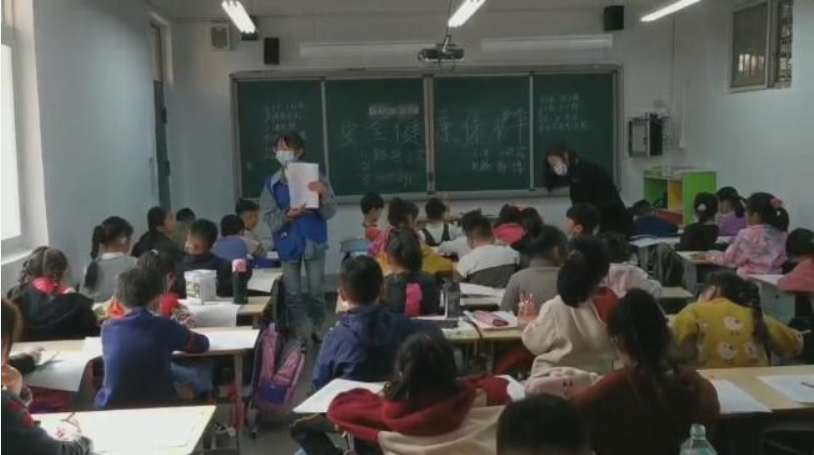

我校高度重视身边典型的示范引领作用，持续推进“华水好人”群体的打造，以身边好人群体的先进事迹和精神影响、带动、教育华水师生积极向上、向善，并取得良好效果。为更好地落实立德树人根本任务，在校园中弘扬正气、颂扬真情、树立榜样，营造健康向上、充满活力、文明有爱的校园文化和精神家园，为学校持续健康快速发展提供强大精神动力，校党委决定在全校范围内开展第一届“感动华水”人物评选活动。活动开展以来，各单位积极配合、踊跃参与，经过单位推荐（联署推荐）、确定候选人等环节，目前5名教师、5名学生、5名校友入围华北水利水电大学第一届“感动华水”人物评选候选人。现按照教师、学生、校友三个组别予以宣传展示。今天推出的是教师组（按姓氏笔画排序）。
王清云
主要事迹：
王清云，2001年毕业于我校水利系水利建筑工程专业，同年留校任教。长期承担《工程图学概论》课程教学任务、毕业设计及实习等实践环节任务，同时担任班导师。她所在的团队建设的课程获得首批国家一流本科课程认定。任教期间，以其扎实的讲课功底、幽默活泼的讲课风格、高度的责任心和春风化雨般的爱心深受学生喜爱，2018年荣获第二届“学生最喜爱老师”称号，并于2020年再次获第三届学生推选提名。
推荐词：
华水情缘二十载，半亩方塘度芳华，一张案几育新苗，三尺讲台润心灵。她，就像一条默默无闻却清澈明净的小溪流，欢声歌唱，经年不息的奔流着，滋养着她流经的土地，大爱无言、润物无声。
刘敏
主要事迹：
测绘与地理信息学院教师、心理咨询师。成功识别并干预校内12起自杀高风险、2起自杀实施危机事件，成功挽救了学生生命。2020年新冠肺炎疫情期间，担任教育部CCNU心理援助平台热线小组长、安阳市社会心理服务专家团队抗疫热线组长，获评河南省教育厅心理学会抗疫热线优秀接线咨询师、学校优秀心理咨询师。
推荐词：
扎根平凡基层，爱岗敬业，永不生锈的螺丝钉精神，是我们水利人自强不息精神的杰出代表。她临难不避，逆行而上，为爱发声，用心守护，是优秀师德的典范。她胸怀大爱，超越平凡、彰显责任的动人事迹堪当感动华水的模范！
李以明
主要事迹：
1977年8月至今任我校音乐教师，原人文艺术教育中心、艺术教育研究中心主任，二级教授。现任中国音乐家协会会员、中国高等教育学会理事（艺术教育学科河南省唯一一位）、中国高等教育学会音乐教育专业委员会副理事长、中国水利音乐舞蹈戏曲协会副会长、河南省学校艺术教育协会副会长等。多次参加国内外学术会议、各类评审委员会工作，以及省部、全国大型演出活动，任艺术指导、主要组织者、评委会主任、专家组组长等。
他躬耕教育40余年，多次荣获华北水利水电大学优秀教师、先进教育工作者、教学名师、“三育人”先进个人、优秀共产党员；河南省师德先进个人、河南省教育厅“学术技术带头人”、中国高等教育学会优秀学会工作者，被教育部艺教委授予“先进工作者”，被水利部授予“优秀教师”称号等。荣获河南省教育奖章。
推荐词：
在工科院校坚守艺术教育40余年，利用艺术教育载体，通过身体力行，在潜移默化中陶冶学生情操，丰富学生想象力，激发学生创造性，培养学生人文精神，教会学生“如何做人”，使自己成为学生专业和生活的领路人，硕果累累。
李艺星
主要事迹：
我校物理与电子学院教师，现年43岁，2005年入校至今，始终兢兢业业在教学一线从事物理教研工作。双眼近两年因疾病致使视力进行性减弱，现仅存光感。可是，残酷的病魔并没有摧毁李艺星的意志。李艺星克服自身病患，坚持为学生授课，在三尺讲台勤勤恳恳奉献着自己的光和热。
推荐词：
作为一名党员教师，始终把教书育人作为自己毕生的事业和追求。他身残志坚，在黑暗的世界里，没有灰心丧气，而是用坚强的意志直面命运的摧残。纵使前路荆棘，他自笑对人生。
庞廖杰
主要事迹：
庞彦杰，河南项城人，研究生学历，北京大学和美国佐治亚南方大学访问学者。华北水利水电大学外国语学院副教授，硕士生导师，公共英语教学一部主任，外国语学院第一党支部书记，聚沙公益协会会长。曾被评为“河南省优秀共产党员”、河南省文明教师，河南省教育系统学雷锋活动先进个人，多次荣获华北水利水电大学“先进教育工作者”、“文明教工”和“优秀共产党员”等荣誉称号。
推荐词：
带领1个团队，9年坚持不懈；资助11个学生，建立38个图书馆，开展50场公益讲座；举行500场公益活动，发起1000对手拉手，实现10000名孩子的阅读梦想。每一个数字，都是一段温暖的故事。聚沙，传递温暖传递爱！
我校高度重视身边典型的示范引领作用，持续推进“华水好人”群体的打造，以身边好人群体的先进事迹和精神影响、带动、教育华水师生积极向上、向善，并取得良好效果。为更好地落实立德树人根本任务，在校园中弘扬正气、颂扬真情、树立榜样，营造健康向上、充满活力、文明有爱的校园文化和精神家园，为学校持续健康快速发展提供强大精神动力，校党委决定在全校范围内开展第一届“感动华水”人物评选活动。活动开展以来，各单位积极配合、踊跃参与，经过单位推荐（联署推荐）、确定候选人等环节，目前5名教师、5名学生、5名校友入围华北水利水电大学第一届“感动华水”人物评选候选人。现按照教师、学生、校友三个组别予以宣传展示。今天推出的是学生组（按姓氏或名称首字笔画排序）。
“小水滴”志愿服务队
主要事迹：
“小水滴”志愿服务队隶属于共青团华北水利水电大学土木与交通学院委员会。自2013年成立以来，先后获得全国社会实践优秀团队、全省十佳正能量贡献奖、河南省青年志愿服务项目大赛银奖等荣誉。“爱织暖冬”、“保护母亲河”、“关爱特殊儿童”……三十余个志愿项目，五千余人次的参与，五万小时的服务时长，小水滴七年来努力做社会主义核心价值观的实践者、良好社会风尚的倡导者、爱心善行的传播者，汇聚了一片爱的海洋
推荐词：
小小水滴，汇涓涓细流，以水的清冽滋润干涸大地；不忘初心，亦矢志不移，以心的炽热温暖人生寒冬。以青春的力量、以担当的姿态、以使命的名义，传播爱心善行、凝聚人间真情，“小水滴”，为华水学子代言！
王大铸
主要事迹：
王大铸，2017级水务工程专业，高中受爱心人士资助完成学业，大学期间自立自强，积极投身学生公益与社会实践。曾任杉树公益郑州秘书处副秘书长，有灵且美乡村艺术营执行营长。2019年修读完大二课程后休学一年到四川大凉山担任支教老师开展志愿服务，引入资源拓展校园文化，支持教育本地化创新发展，服务近600余名学生。担任支教组织项目负责人，促进8所合作学校校园项目落地发展。所在支教项目入选2019年国务院扶贫司评选的“志愿者扶贫50佳案例”。
推荐词：
作为新时代华水青年学子，王大铸自立自强懂得感恩；坚持在实践中受教育、长才干、做贡献，把爱与知识的种子播撒在大凉山深处，平凡的成长中看到彰显着不一样的责任和坚守
华水研究生支教团
主要事迹：
华水研究生支教团自2013年7月起开始前往贵州省安龙县开展支教扶贫工作，至今已选派33名优秀学生赴往该地。团队利用专业优势，以项目为依托，整合各方资源，提升志愿服务活动质量，合力打造品牌项目。先后开展了“华水润荷都”系列活动、“上善若水爱心助学平台”等多个志愿服务项目。并先后获得多项荣誉称号，为流域水利改革发展及规范化建设提供坚强保障和智力支撑，且已连续两年被当地政府列为民生项目，得到团中央的充分肯定。
推荐词：
恰同学少年，风华正茂；挥书生意气，激昂青春。青春火，炫彩成花，扶助弱体；英才园，桃李茁长，自成自就。大手牵小手，延伸无限天地;新人继旧人，抒写青春年华。多彩贵州之地，多彩华水青年！
陈国衡
主要事迹：
陈国衡，华北水利水电大学水利学院工程造价专业2018034班学生。于2012年考入华北水利水电大学水利学院水利水电工程专业，2013年10被诊断出患有尿毒症，随后休学治疗。在学校老师和同学以及爱心互助基金的关心鼓舞下坚强抗击病魔，最终于2018年12月接受肾移植后手术，术后恢复良好，并于2019年12月重返校园，继续学习。
推荐词：
一位不幸确诊为尿毒症晚期但坚强与病魔抗争六年的人，720次透析成为他向命运证明自己的武器。向梦前进，为爱重生，在他的身上人们看到的是奋勇拼搏、积极向上的力量。乘爱之翼，不坠青云之志；为爱重生，书写青春华章！

益目公益团队
主要事迹：
益目公益团队是外国语学院青年志愿者协会的重点建设队伍。该团队自成立以来，积极开展公益活动，不忘助盲初心，遵循爱心奉献的理念，活跃在盲人朋友、凤凰台社区、安全保护伞活动以及其他活动之中，获得了大家的认可。这是一个新生团队，也是一支充满活力，潜力无限的志愿者团队。
推荐词：
她愿做一盏明灯，驱逐生活的黑暗；愿做一粒火种，传递社会的温情。她以一颗赤城火热的公益之心去贴近每一颗需要关照的心灵，她就是外国语学院青年志愿者协会的益目公益团队。
安少华
主要事迹：
安少华，男，1963年6月出生，蒙古族，内蒙古赤峰人，中共党员，我校水工81级学生。中国红十字会高山救援队队长、新疆蓝天救援队队长兼新疆品牌督导官，西盟户外网站创始人、总裁。国家防水产业技术创新战略联盟秘书长，新疆汇英利防水技术有限公司董事长。他带领新疆蓝天救援队在2014“肯拓普”中国山地救援交流赛（库尔德宁站）比赛中，勇夺总分第一的优异成绩，受到北京蓝天救援总部的特别嘉奖。
推荐词：
登顶珠峰，一览众山小；救助生命，桃李系母校。他精于专业、热心公益，热爱生活，坚毅勇敢、慈爱善良。他以生命拯救生命，以个人力量推动公益事业发展，不忘初心使命，传播大爱无疆。华水老安，世人心安。
刘慈欣
主要事迹：
刘慈欣，男，汉族，1963年6月出生，山西阳泉人，我校水工81级学生，高级工程师，科幻作家，中国作协第九届全国委员会委员，中国科普作协会员，山西省作协副主席。其作品连续八年获得中国科幻文学最高奖“银河奖”，被誉为“当代中国科幻第一人”。《三体》三部曲被普遍认为是中国科幻文学的里程碑之作，将中国科幻推上了世界的高度，分别荣获雨果奖、全球华语科幻文学最高成就奖、轨迹奖、克拉克奖，并被特别授予特级华语科幻星云勋章。
推荐词：
宇宙无限，星河闪烁。他以书为斧，开万世科幻之路，他笔下的世界灿烂于银河之心，闪亮于科幻世界。水润万物，华水为家。他以情为舟，游韶华寒窗之地，他暖心有爱、朴实无华，勉励华水学子立足大地，仰望星空，成就人生梦想，传承华水精神。
地质工程8802班
主要事迹：
2011年11月，我校地质8802班的一位同学因病去世，班上三位同学代表前往吊唁并带去同学们的慰问。当时，同学的孩子才上初中一年级，且家庭困难。同学们就商议，提出成立地质8802班互助基金，帮扶困难的同学家庭，得到了全班同学的积极响应和大力支持。
“互助金管理小组”于2011年11月16日正式成立，并制定了《华北水利水电学院地质8802班互助基金管理办法》，明确了成立的意义和资金的管理方式。号召同学每年每人自愿捐助1000元互助金，资助因病去世同学的孩子，直至就业。已经连续资助十年，目前孩子本科毕业，如愿考取我校研究生，立志追随父亲奋斗之路，继续传承华水精神，感恩华水，回报社会。2018年得知班里又有一位同学因病去世，三位同学代表全班前往慰问。经同学们商议，决定把这位同学的孩子也列为资助对象，按照相同的标准进行资助。孩子目前是大三学生，已连续资助三年。
截止2020年11月16日地质8802班互助基金已经走过了十个年头。同学们秉承不忘初心、弘扬华水精神，239人次汇集了爱心基金25.6万元，共资助了两个孩子21.1万元。
地质8802班互助基金成立的宗旨是：在班级同学遇到重大疾病、人身意外伤害时，全班同学能够体现集体的力量，共同帮助同学和其家人共度难关。众人拾柴火焰高，团结就是力量，在全班同学的爱心支持下，地质8802班互助基金一定会一直坚持下去，不忘初衷，为同学中的困难家庭继续奉献爱心。
推荐词：
一时同窗，一世相守。他们化为孩子父母的手，继续牵着孩子长大，他健康，他幸福，他向上，像极了曾经窗明几净的恰同学少年。未来的路很长，浩瀚长空，上可告挚友，下可暖人间。
汤松
主要事迹：
汤松自出生即患罕见病——大疱型表皮松懈症和肢体残疾，全身皮肤轻轻一碰就破，双手弯曲成拳头状，双脚掌残缺。
2006年9月汤松考入华北水利水电学院数学与应用数学专业，2011年9月考入西北工业大学企业管理专业。研究生毕业后，他求职处处碰壁，决定自主创业，开办洛阳琢玉教育培训班。创业以来，为12名残疾学生或残疾人子女免除补习费7万余元。2020年9月拿出1万元资助1名残疾研究生和2名残疾大学新生。2020年5月汤松被评为全省自强模范，励志事迹被洛阳电视台、《洛阳晚报》、《河南青年时报》等媒体报道。
2006年9月汤松考入华北水利水电学院数学与应用数学专业，2011年9月考入西北工业大学企业管理专业。研究生毕业后，他求职处处碰壁，决定自主创业，开办洛阳琢玉教育培训班。创业以来，为12名残疾学生或残疾人子女免除补习费7万余元。2020年9月拿出1万元资助1名残疾研究生和2名残疾大学新生。2020年5月汤松被评为全省自强模范，励志事迹被洛阳电视台、《洛阳晚报》、《河南青年时报》等媒体报道。
推荐词：
即使如蝴蝶般脆弱，也顽强挥动翅膀与命运对抗。看过这世间的阴影，但还是义无反顾朝向光明。肢体的虚弱阻挡不了你对知识的渴望，轮椅的禁锢磨灭不了你对教育的信念。励志创业是你对自己的承诺，奉献自我是你对社会的善意，你是茫茫雪山上屹立不倒的一棵松。
陆挺宇
主要事迹：
陆挺宇，男，汉族，1965年2月出生，北京人，高级工程师，中共党员，1992年毕业于我校土木工程系工业与民用建筑专业。历任北京城市建设开发总公司工程主管、中国中小企业投资有限公司总经理，懋源地产创始人，现任北京懋源控股股份有限公司董事长。我校“海外校友奖学金”“杰出校友奖学金”捐赠人、河南省华北水利水电大学教育发展基金会原始注册资金捐赠人。
推荐词：
能坚持，有魄力，敢挑战，大展身手，崭露头角；精眼光，有抱负，勇创新，披荆斩棘，站稳脚跟；树标杆，爱公益，乐奉献，捐资捐物，无私奉献。情系华水，不忘母校，在母校设立了海外校友奖学金、杰出校友奖学金，为学弟学妹们树榜样，供资助，奖优秀，激创新，促英才。青山在，同窗情正浓；岁月增，情怀依旧深情。